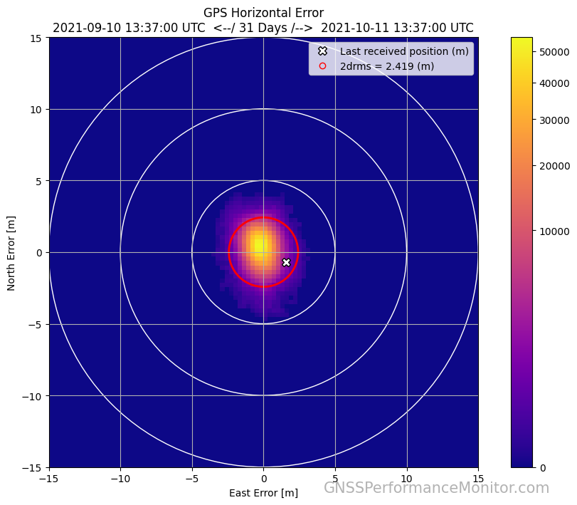
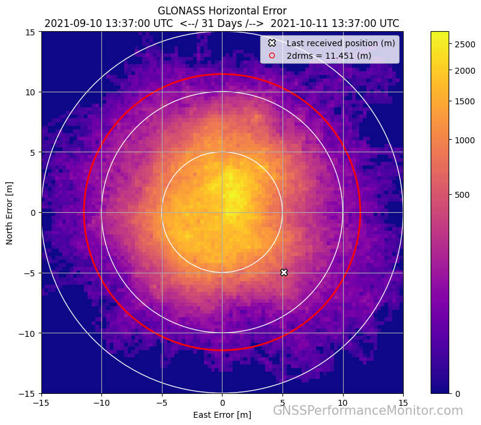
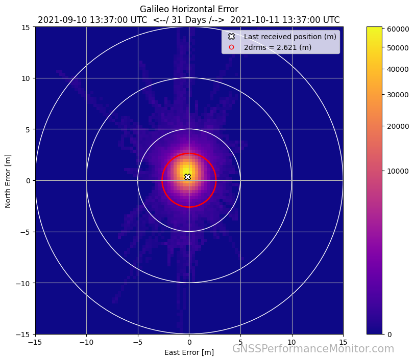
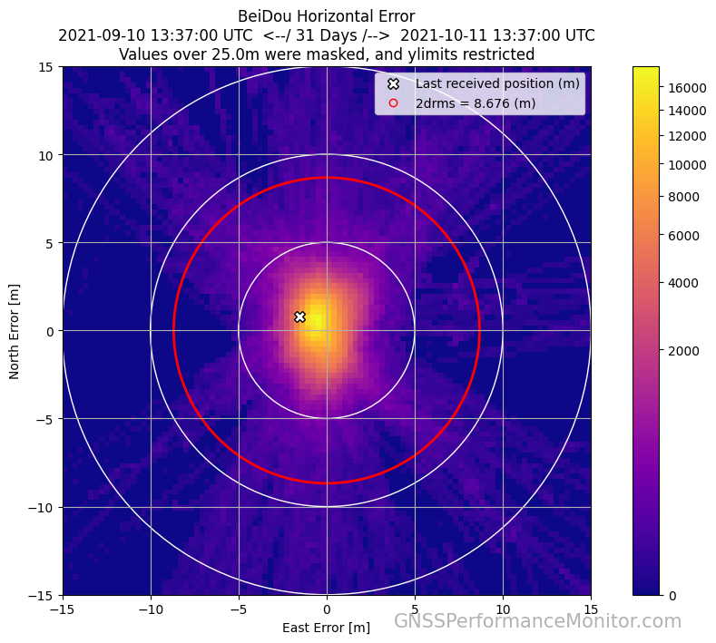

GNSS Performance Monitor
Home
GPS
GLONASS
Galileo
BeiDou
About Us / FAQ
Custom Plot Viewer
Data Download
Historical Data
Please note that all data is delayed by 24 hours before showing up on the website.
This website is located in Athens, Ohio in the United States. The Galileo and BeiDou constellations are not yet fully operational in our area.
Select date to view data:




Absolute Horizontal Position Error
Select a satellite to view: